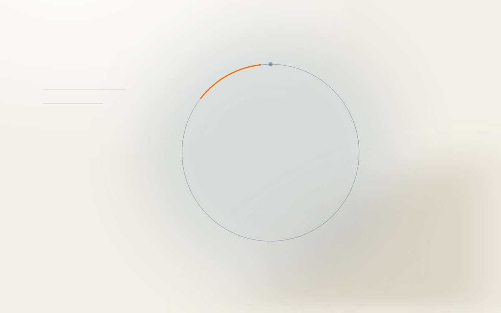
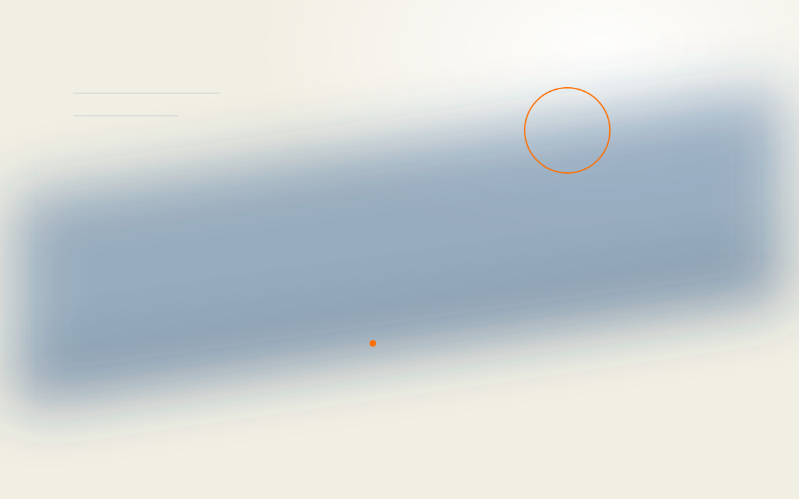
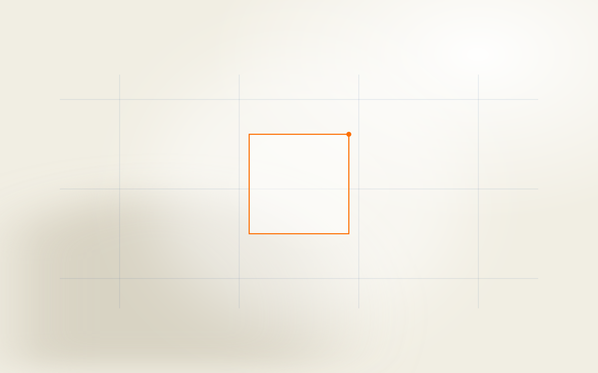

All articles
按发布时间倒序，共 6 篇。点上面的标签可以只看某一类。
工商系统上写着两个数，银行账上只有一个。差的那部分，责任什么时候落到股东头上。

钱是从公司借的，也是自己还的，为什么还要按股息红利补 20% 的个税。
专利、设备、房产作价入股，评估报告的数和税务局认的数，经常不是同一个。

不是查得细，是查得准。这三类原始凭证几乎是必看项，提前理一遍能省很多解释。
货是真的，钱也付了，最后卡在开票主体和收货主体对不上。

同一笔合同，选错纳税期限不会少交税，但会多出一条逾期记录。
这个栏目暂时还没有文章。
公众号当天推送，站点按周整理。两边内容一致，都不发广告。
微信扫码关注 振博财税
新文当天推送，比站点早